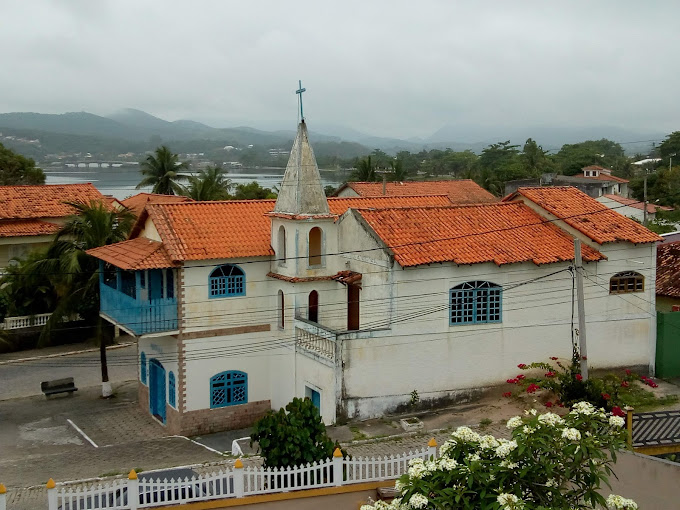

☀️
Paróquia Nossa Senhora de Nazareth
Inicio
História
Missas
Padres
Pastorais
Evangelho
Capelas
Capelas da Paróquia

Capela São Sebastião
Endereço: Est do Girau - Boqueirão
Ver no Mapa
Capela São João Batista
Endereço: R. Segisfredo O. Bravo - Centro
Ver no Mapa
Secretaria Online


 Secretaria Online
Secretaria Online